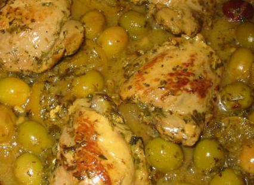

Recette n° 225 : tajine de poulet aux légumes et aux
citrons confits

Ingrédients pour 8
personnes :
- 8 cuisses et heuts de cuisses de poulet de Loué
- 200 g d'olives vertes dénoyautées
- 3 citrons confits
- 8 carottes moyennes
- 2 oignons épluchés et ciselés
- une grosse courgette
- 10 g de raisins secs
- 100 g de pruneaux dénoyautés
- 2 cuillers à café d'épices à tajine, par
exemple de chez Ducros
- huile d'olive.
- sel et poivre selon goût.
Préparation :
- préchauffer le four à 120C
- couper carottes et courgette
- faire revenir le poulet sous ses deux faces à la sauteuse avec
de l'huile d'olive
- ajouter l'oignon émincé et faire revenir à feu
plus doux encore 5 minutes
- ajouter un dmi-litre d'eau ; ajouter l'ail, le curcuma, le
cumin, le ras el hanout, le paprika, le gingembre
- saler et poivrer très légèrement
- ajouter olives, courgette en tronçons, carottes, épices
et citrons confits
- verser le tout dans une cocotte en fonte (c'est mieux que le plat
à tajine), ajouter pruneaux et raisins secs ; couvrir et mettre
au four pendant 2 heures
- en fin de cuisson, goûter et ajuster sel et poivre selon
goût
- servir de préférence dans la cocotte de cuisson
Observations :
1 - recette préparée en août 2009 pour la famille
Mathews à Quiberon ; très apprécié avec du
quinoa et de la graîne de couscous comme légumes.
2 - surout ne pas touiller pendant la cuisson (ni ensuite d'ailleurs)